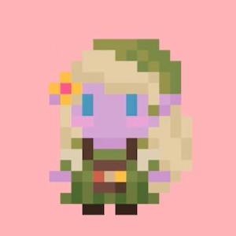
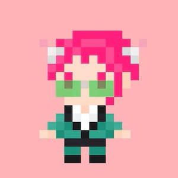
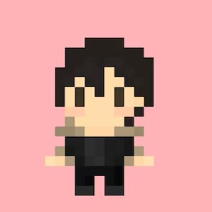

Integrantes
Lilén Buckley

Victoria González

Alejandro Iribarren

El proyecto
Este sitio reúne tres juegos interactivos: Trivia, Carrera con dados y Memotest con cartas españolas. Todos desarrollados para el Trabajo Práctico N°1 de la materia Informática General (Cátedra Drelichman) dentro del marco de la carrera de Artes Multimediales de la Universidad Nacional de las Artes.
Utilizamos HTML para organizar el contenido, CSS para aplicar estilos y JavaScript para las reglas y acciones e interactividad de los juegos. Los puntajes se almacenan localmente en el navegador web del usuario, es decir que la información se guarda sin tiempo de expiración.
Para una mejor interactividad en el sitio mantuvimos la misma estética retro en todas las páginas, incluyendo botones, formato y organización. Dividimos el trabajo en un juego para cada integrante, siempre manteniendo una misma línea y respetando los commits de cada uno. El objetivo grupal era lograr un sitio coherente y fácil de navegar.
En el menú de navegación encontrarás el acceso a las seis páginas del sitio. En la ventana de incio podrás acceder con un click a los tres juegos, que los encontrarás también con sus respectivos nombres en el menú. Asimismo podrás ingresar a la ventana de puntajes que guarda un registro de tus partidas, donde podrás ver las fechas en las que jugaste, tu mejor récord, tus victorias, aciertos y derrotas, y tus intentos y el tiempo que te llevó completar los juegos cada día.
Los juegos y su desarrollo
- Trivia: Preguntas de verdadero o falso obtenidas de Open Trivia DB.
- Carrera de dados: Un recorrido con casillas especiales, intentos limitados y tiempo.
- Memotest: Un juego de memoria para encontrar las parejas de cartas.
La idea del "Memotest" nació del recuerdo de jugar con dos mazos de cartas españolas para encontrar pares. El juego busca incentivar la velocidad mental del usuario y su capacidad de asociación. El juego fué planteado desde un HTML como base y programado en JavaScript para poder obtener movimiento de volteado de cartas y las mecánicas de funcionamiento tales como; los botones de inicio y reinicio de juego, la cuenta atrás, y el manejo de los puntajes que luego se visualizan en la pestaña puntajes. La mecanica es simple, se deben voltear las cartas de a pares para comparar si son iguales o no, iniciando un proceso de busqueda del usuario donde debe recordar donde está cada carta. En caso de ser iguales la carta se bloquea y debes buscar otros 2 pares. Se realiza la misma acción de busqueda hasta encontrar todos los pares (victoria) o hasta quedarse sin tiempo (derrota)
El juego "Carrera de Dados" busca generar una expectativa en el usuario y dejar su triunfo al azar. Desde JavaScript se crea el tablero, se mueve la ficha y se evalúa la posición de ésta. Contiene casillas especiales Bomba y Boost (destacadas desde el css), las cuales te hacen avanzar o retroceder casilleros. El juego se gana cuando llegás a la casilla número 20 antes de que se acabe el minuto o te quedes sin intentos.
"Trivia" es un juego de preguntas de tipo verdadero o falso. Cuenta con 2 botones de selección para que el usuario pueda decidir si considera que la pregunta es correcta o no y dependiendo de su resultado se le suman 10 puntos (correcta) o no (incorrecta). También cuenta con un botón de reinicio o de finalizar antes el intento. Está asociado a una API antes mencionada que es la que proporciona las preguntas.
Uso de inteligencia artificial
Durante el desarrollo se utilizaron ChatGPT y Gemini como herramientas de apoyo para proponer ideas, revisar y corregir código, y recibir sugerencias para organizar el CSS, las cajas y los márgenes.